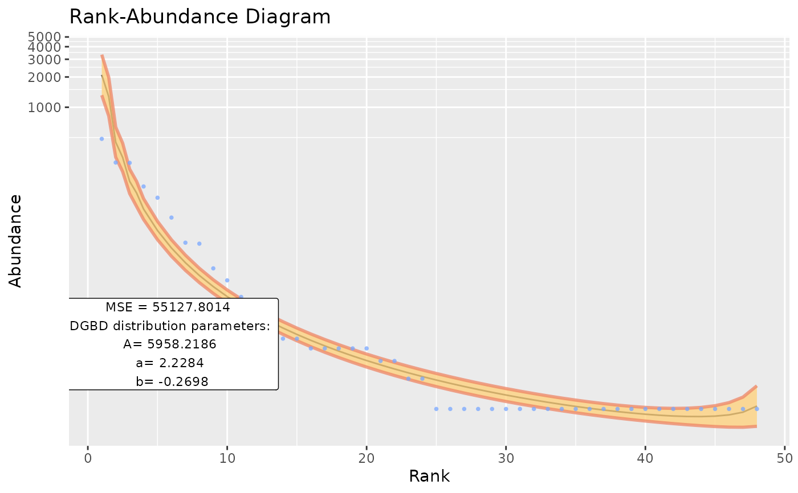
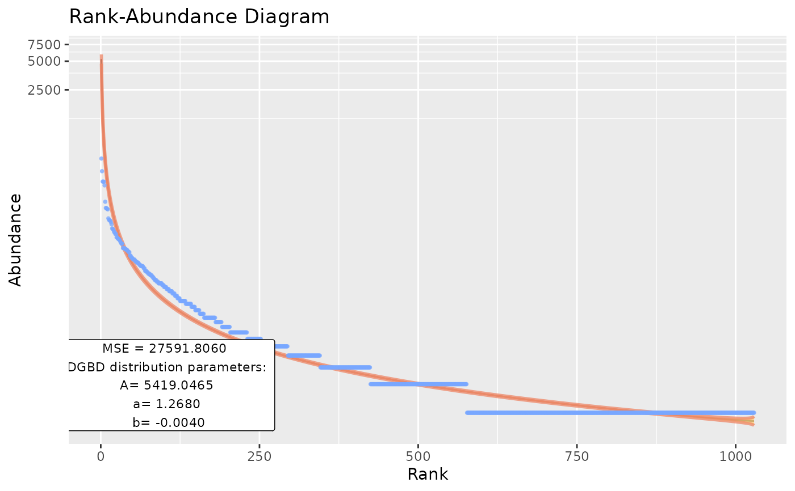
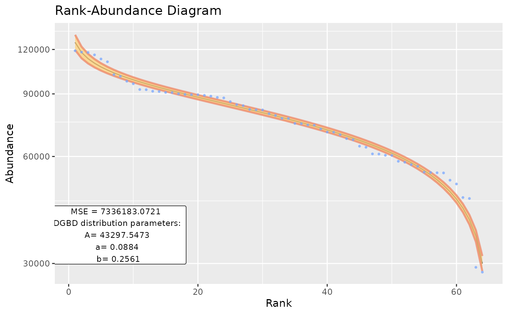
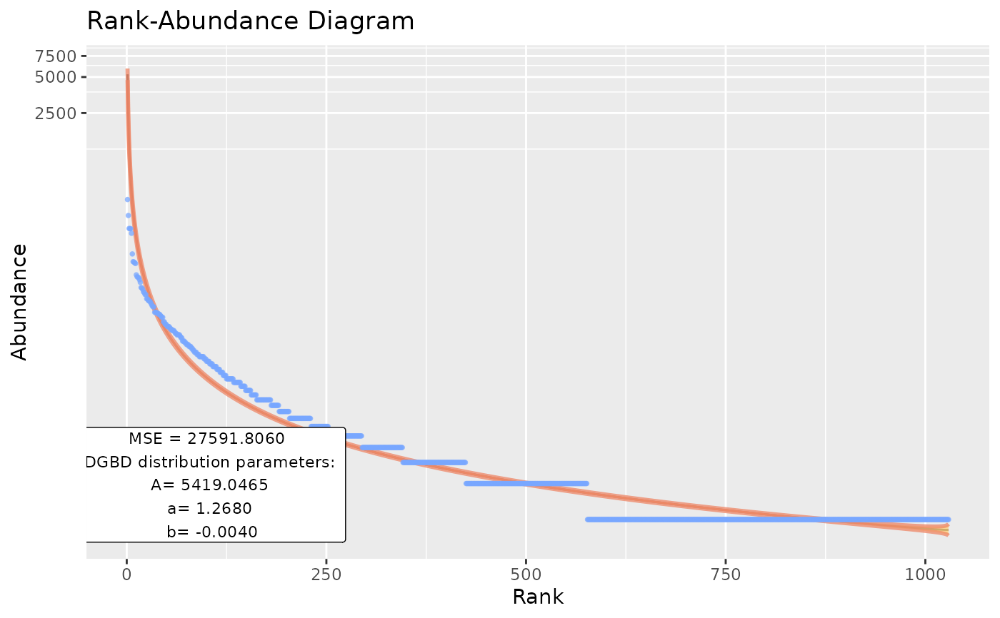
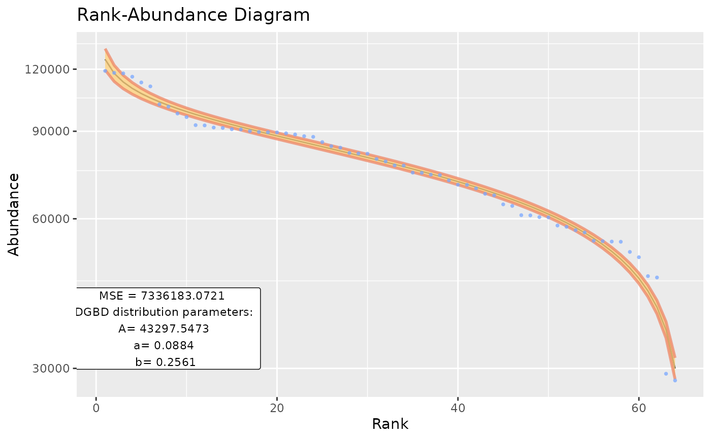

Summarize the Modeled DGB Distribution
Usage
BC_report(
df_abundance = NULL,
column = NULL,
BC_plot_object = NULL,
show_plot = TRUE,
show_stats = TRUE,
...
)Arguments
- df_abundance
A data frame that contains abundance data.
- column
Either a string with the name of the column or the number of the column that stores the abundances in the data frame.
- BC_plot_object
A previous object generated by
BC_plot.- show_plot
Logical. Whether to plot the DGB distribution. Defaults to true.
- show_stats
Logical. Whether to print the parameters of the DGB distribution and its model_extra to the console. Defaults to true.
- ...
passes arguments to
BC_plot.
Value
A list with the following elements: a matrix that contains the parameters used and their confidence intervals, the model_extra vector and the DGBD plot.
Examples
BC_report(EC_Metabolite,2)
#> [1] "The data fit the DGB distribution with parameters:"
#> A a b
#> 2.5 % 2070.538 2.421084 -0.46252036
#> 50 % 5958.219 2.228363 -0.26979975
#> 97.5 % 17145.482 2.035643 -0.07707913
#> [1] "And the fit has a MSE of:"
#> [1] 55127.8

BC_report(df_abundance=DGBD::MOMv3.3, column=7, show_stats=FALSE)
 BC_report(Tara_Data,2,is_phyloseq=TRUE)
#> [1] "The data fit the DGB distribution with parameters:"
#> A a b
#> 2.5 % 4327.562 1.288704 -0.024775637
#> 50 % 5419.046 1.267957 -0.004028272
#> 97.5 % 6785.821 1.247210 0.016719093
#> [1] "And the fit has a MSE of:"
#> [1] 27591.81

EC_codon_dir <- system.file("extdata", "EC_Codon.csv", package = "DGBD")
EC_codon <- read.csv(EC_codon_dir,header=TRUE,row.names=1)
BC_report(EC_codon, column=1)
#> [1] "The data fit the DGB distribution with parameters:"
#> A a b
#> 2.5 % 38795.90 0.10674700 0.2377527
#> 50 % 43297.55 0.08837031 0.2561294
#> 97.5 % 48321.54 0.06999362 0.2745061
#> [1] "And the fit has a MSE of:"
#> [1] 7336183

BC_report(Tara_Data,2,is_phyloseq=TRUE)
#> [1] "The data fit the DGB distribution with parameters:"
#> A a b
#> 2.5 % 4327.562 1.288704 -0.024775637
#> 50 % 5419.046 1.267957 -0.004028272
#> 97.5 % 6785.821 1.247210 0.016719093
#> [1] "And the fit has a MSE of:"
#> [1] 27591.81

EC_codon_dir <- system.file("extdata", "EC_Codon.csv", package = "DGBD")
EC_codon <- read.csv(EC_codon_dir,header=TRUE,row.names=1)
BC_report(EC_codon, column=1)
#> [1] "The data fit the DGB distribution with parameters:"
#> A a b
#> 2.5 % 38795.90 0.10674700 0.2377527
#> 50 % 43297.55 0.08837031 0.2561294
#> 97.5 % 48321.54 0.06999362 0.2745061
#> [1] "And the fit has a MSE of:"
#> [1] 7336183
